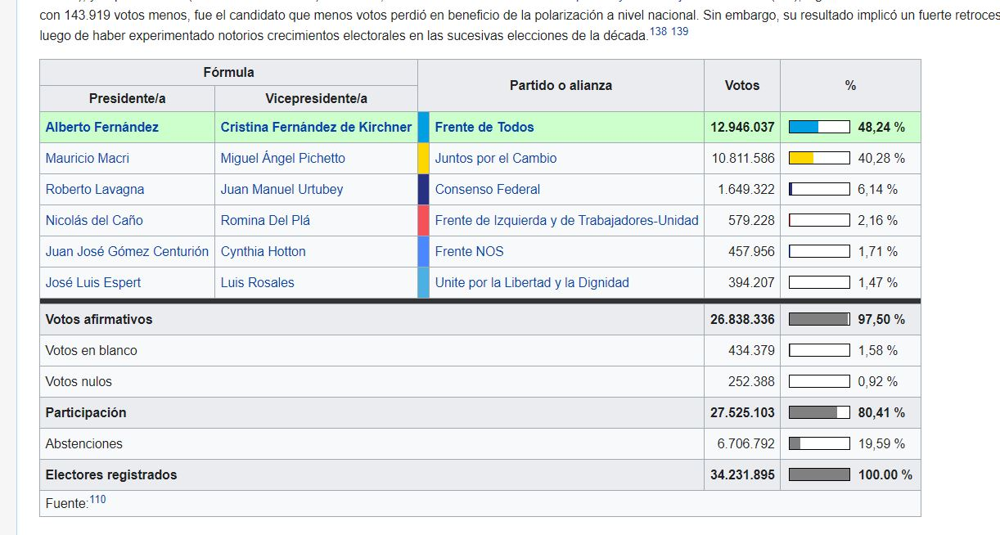

En este post mostraremos los datos que utilizamos, e introduciremos dos subsecciones que permiten seguir los pasos que hicimos para obtenerlos.
Antes de comenzar, abrimos algunas librerías.
library(tidyverse) # trabajaremos en el paradigma "tidy"
library(gt) # para formatear tablasComencemos por presentar sintéticamente los datos elejidos para trabajar. Como dijimos, nos interesaba explorar el desempeño y los discursos de los candidatos al poder ejecutivo en las elecciones argentinas de 2019 -un país federal, que incluye cargos ejecutivos electivos a diversos niveles. En este marco, y dado nuestro fin experimental y exploratorio, decidimos quedarnos con los siguientes datos:
Nuestra base quedó conformada de la siguiente manera:
# Llamamos al script que agrega y procesa datos.
# Nos extenderemos sobre este punto enseguida
source("https://raw.githubusercontent.com/CVFH/Tuits_arg_2019/master/preparacion_datos_tuits.R", encoding = "UTF-8")
# Solicitamos datos
datos_base <- traerDatosTuits("base")
# visualizamos
datos_base %>%
gt() %>%
gt::tab_header(
title = "Datos Utilizados",
subtitle = "TuitsArg2019") %>%
gt::tab_style(
style= cell_fill(color = "#00BFFF", alpha = 0.5),
locations = cells_title(groups = c("title", "subtitle"))) %>%
gt::tab_style(
style= cell_text(
align = "center"),
locations = cells_stubhead()) %>%
gt::tab_style(cell_fill(color = "#C0EEFF", alpha = 0.5),
locations = cells_body()) %>%
gt::tab_style(
style= cell_text(
color = "#0B0B0B",
align = "center",
v_align = "middle",
weight = "lighter"),
locations = cells_body())| Datos Utilizados | ||||
|---|---|---|---|---|
| TuitsArg2019 | ||||
| Candidato | screen_name | Distrito | tipo_fecha | Cargo |
| Alberto Fernández | alferdez | Nación | Simultanea | Presidente |
| Mauricio Macri | mauriciomacri | Nación | Simultanea | Presidente |
| Roberto Lavagna | RLavagna | Nación | Simultanea | Presidente |
| Nicolás del Caño | NicolasdelCano | Nación | Simultanea | Presidente |
| Juan José Gómez Centurión | juanjomalvinas | Nación | Simultanea | Presidente |
| José Luis Espert | jlespert | Nación | Simultanea | Presidente |
| Gildo Insfrán | insfran_gildo | Formosa | Desdoblada | Gobernador |
| Adrián Floro Bogado | adrianbogadoOK | Formosa | Desdoblada | Gobernador |
| Alberto Rodríguez Saá | alberto_rsaa | San Luis | Desdoblada | Gobernador |
| Claudio Poggi | claudiojpoggi | San Luis | Desdoblada | Gobernador |
| Omar Perotti | omarperotti | Santa Fe | Desdoblada | Gobernador |
| Antonio Bonfatti | AntonioBonfatti | Santa Fe | Desdoblada | Gobernador |
| Gustavo Melella | gustavomelella | Tierra del Fuego | Desdoblada | Gobernador |
| Rosana Bertone | RosanaBertone | Tierra del Fuego | Desdoblada | Gobernador |
| Axel Kicillof | Kicillofok | Buenos Aires | Simultanea | Gobernador |
| María Eugenia Vidal | mariuvidal | Buenos Aires | Simultanea | Gobernador |
| Horacio Rodríguez Larreta | horaciorlarreta | CABA | Simultanea | Gobernador |
| Matías Lammens | MatiasLammens | CABA | Simultanea | Gobernador |
| Raúl Jalil | RaulJalil_ok | Catamarca | Simultanea | Gobernador |
| Roberto Gómez | Catamarca | Simultanea | Gobernador | |
| Ricardo Quintela | QuintelaRicardo | La Rioja | Simultanea | Gobernador |
| Julio Martínez | JulioMartinezLR | La Rioja | Simultanea | Gobernador |
Para “explorar la popularidad” de los candidatos (como veremos en la sección correspondiente), debimos colectar datos sobre los resultados electorales.
Para eso desarrollamos este script que explicamos en este post. El código define una función que parte de enlaces de Wikipedia y/o de la Dirección Nacional Electoral argentina, y devuelve una tabla de datos tidy1.
Por ejemplo, partimos del enlace: https://es.wikipedia.org/wiki/Elecciones_presidenciales_de_Argentina_de_2019
…que contiene la siguiente tabla:

Extrajimos de esta manera los datos:
# Primero, llamamos al script que diseñamos
source("https://raw.githubusercontent.com/CVFH/Tuits_arg_2019/master/preparacion_datos_electorales.R", encoding = "UTF-8")
# Llamamos a una función para obtener los datos presidenciales,
# asignando el parámetro correspondiente ("presid")
votos_presid <- traerDatosElectorales("presid")
# Tenemos nuestros datos!
votos_presid %>%
gt() %>%
gt::tab_header(
title = "Elecciones presidenciales Argentina 2019",
subtitle = "Resultados") %>%
gt::tab_style(
style= cell_fill(color = "#00BFFF", alpha = 0.5),
locations = cells_title(groups = c("title", "subtitle"))) %>%
gt::tab_style(
style= cell_text(
align = "center"),
locations = cells_stubhead()) %>%
gt::tab_style(
style= cell_fill(color = "#E9EDF1", alpha = 0.5),
locations = cells_body()) %>%
gt::tab_style(
style= cell_text(
color = "#050505",
align = "center",
v_align = "middle",
weight = "lighter"),
locations = cells_body())| Elecciones presidenciales Argentina 2019 | |||||||||
|---|---|---|---|---|---|---|---|---|---|
| Resultados | |||||||||
| Candidato | Vicecandidato | Partido/Alianza | Votos | Porcentaje | Ranking | Distrito | screen_name | tipo_fecha | Cargo |
| Alberto Fernández | Cristina Fernández de Kirchner | Frente de Todos | 12946037 | 48.24 | 1 | Nación | alferdez | Simultanea | Presidente |
| Mauricio Macri | Miguel Ángel Pichetto | Juntos por el Cambio | 10811586 | 40.28 | 2 | Nación | mauriciomacri | Simultanea | Presidente |
| Roberto Lavagna | Juan Manuel Urtubey | Consenso Federal | 1649322 | 6.14 | 3 | Nación | RLavagna | Simultanea | Presidente |
| Nicolás del Caño | Romina Del Plá | Frente de Izquierda y de Trabajadores-Unidad | 579228 | 2.16 | 4 | Nación | NicolasdelCano | Simultanea | Presidente |
| Juan José Gómez Centurión | Cynthia Hotton | Frente NOS | 457956 | 1.71 | 5 | Nación | juanjomalvinas | Simultanea | Presidente |
| José Luis Espert | Luis Rosales | Unite por la Libertad y la Dignidad | 394207 | 1.47 | 6 | Nación | jlespert | Simultanea | Presidente |
Una vez identificadas las cuentas de nuestro interés, nos ocupamos de traer los datos de los tuits emitidos con rtweet.
Por ejemplo, para @Kicillofok, utilizamos el comando:
tuits_Kicillofok <- get_timeline("Kicillofok")
Con esto, obtenemos una tabla (aprox) como la siguiente:
head(tuits_Kicillofok) %>%
gt() %>%
gt::tab_header(
title = "Base cruda - ejemplo") %>%
gt::tab_style(
style= cell_fill(color = "#00BFFF", alpha = 0.5),
locations = cells_title()) %>%
gt::tab_style(
style= cell_text(
align = "center"),
locations = cells_stubhead()) %>%
gt::tab_style(cell_fill(color = "#C0EEFF", alpha = 0.5),
locations = cells_stubhead()) %>%
gt::tab_style(
style= cell_text(
color = "#0B0B0B",
align = "center",
v_align = "middle",
weight = "lighter"),
locations = cells_body())| Base cruda - ejemplo | |||||||||||||||||||||||||||
|---|---|---|---|---|---|---|---|---|---|---|---|---|---|---|---|---|---|---|---|---|---|---|---|---|---|---|---|
| created_at | text | rts | fav_count | tweet_id | link | screen_name | location | in_reply_to_screen_name | in_reply_to_status_id | in_reply_to_user_id | latitude | longitude | mention_ids | mention_screen_names | place_latitude | place_longitude | user_id | created_at_user | description | favourites_count | followers_count | friends_count | geo_enabled | name | statuses_count | time_zone | verified |
| 2020-07-16 00:39:36 | Nos reunimos con referentes sindicales para conversar sobre las necesidades de cada sector para la pospandemia. Seguimos trabajando para mitigar los efectos económicos de la pandemia sobre los trabajadores. Agradezco la participación de los representantes en la mesa de diálogo. https://t.co/BS7xp8md0a | 184 | 698 | 1.283562e+18 | https://twitter.com/Kicillofok/status/1283561887574249472 | Kicillofok | NA | NA | NA | NA | NA | NA | (u'',) | NA | NA | NA | 2953955753 | 2014-12-31 23:38:55 | Gobernador de la Provincia de Buenos Aires. | 4044 | 1185178 | 307 | TRUE | Axel Kicillof | 4247 | NA | TRUE |
| 2020-07-15 20:54:53 | Con el gobernador @jmcapitanich intercambiamos experiencias y analizamos la implementación de las distintas fases del aislamiento obligatorio en nuestras provincias. https://t.co/EgcRPzQVQh | 204 | 968 | 1.283505e+18 | https://twitter.com/Kicillofok/status/1283505338390634496 | Kicillofok | NA | NA | NA | NA | NA | NA | (u'143852870',) | jmcapitanich | NA | NA | 2953955753 | 2014-12-31 23:38:55 | Gobernador de la Provincia de Buenos Aires. | 4044 | 1185178 | 307 | TRUE | Axel Kicillof | 4247 | NA | TRUE |
| 2020-07-15 18:01:27 | Estamos haciendo grandes esfuerzos y los resultados están a la vista. Gracias a la solidaridad podemos ayudar a más personas a recuperarse. Si tuviste coronavirus, #DonáPlasma 📞0800-222-0101 https://t.co/rrLmZRpur2 | 118 | 267 | 1.283462e+18 | https://twitter.com/Kicillofok/status/1283461690479255552 | Kicillofok | NA | Kicillofok | 1.283462e+18 | 2953955753 | NA | NA | (u'',) | NA | NA | NA | 2953955753 | 2014-12-31 23:38:55 | Gobernador de la Provincia de Buenos Aires. | 4044 | 1185178 | 307 | TRUE | Axel Kicillof | 4247 | NA | TRUE |
| 2020-07-15 18:01:24 | Visitamos el Centro de Monitoreo de Malvinas Argentinas donde entregamos nuevos respiradores al intendente @Nardini_Leo, que se sumarán al sistema sanitario local. También nos reunimos con pacientes recuperados de COVID-19 que fueron tratados con plasma. https://t.co/wvsu3QThNz | 243 | 745 | 1.283462e+18 | https://twitter.com/Kicillofok/status/1283461679888596992 | Kicillofok | NA | NA | NA | NA | NA | NA | (u'178840402',) | Nardini_Leo | NA | NA | 2953955753 | 2014-12-31 23:38:55 | Gobernador de la Provincia de Buenos Aires. | 4044 | 1185178 | 307 | TRUE | Axel Kicillof | 4247 | NA | TRUE |
| 2020-07-14 23:08:21 | Esta tarde mantuvimos una videoconferencia con los intendentes del AMBA para realizar un balance del aislamiento en la región y consensuar los pasos a seguir en la siguiente fase. https://t.co/gpicsDWmRB | 323 | 1253 | 1.283177e+18 | https://twitter.com/Kicillofok/status/1283176539669041158 | Kicillofok | NA | NA | NA | NA | NA | NA | (u'',) | NA | NA | NA | 2953955753 | 2014-12-31 23:38:55 | Gobernador de la Provincia de Buenos Aires. | 4044 | 1185178 | 307 | TRUE | Axel Kicillof | 4247 | NA | TRUE |
| 2020-07-14 21:36:22 | A partir de ahora podemos contar con más herramientas sanitarias para el distrito, que se materializan en nuevos derechos para sus habitantes. https://t.co/YGdxAabyvC | 109 | 359 | 1.283153e+18 | https://twitter.com/Kicillofok/status/1283153388629303298 | Kicillofok | NA | Kicillofok | 1.283153e+18 | 2953955753 | NA | NA | (u'',) | NA | NA | NA | 2953955753 | 2014-12-31 23:38:55 | Gobernador de la Provincia de Buenos Aires. | 4044 | 1185178 | 307 | TRUE | Axel Kicillof | 4247 | NA | TRUE |
El default de get_timeline trae los últimos 100 tuits. Como máximo, las normas de Twitter permiten extraer 3.200 tuits. Dado que este límite implica que la fecha de los tuits que obtenemos con el llamado va cambiando con el tiempo, nosotros optamos por guardar estas bases de datos en archivos .csv, a los que se puede acceder desde este enlace a nuestro repositorio de Git.
Por este mismo motivo, desarrollamos una función que agrega y emprolija estos datos, de manera similar a como hicimos con los datos electorales. Pueden verla en este script, que explicamos en este post.
El resultado de aplicar estas operaciones es una tabla como la siguiente:
joined_candidatos <- traerDatosTuits("tot")
head(joined_candidatos) %>%
gt() %>%
gt::tab_header(
title = "Base transformada - ejemplo ") %>%
gt::tab_style(
style= cell_fill(color = "#00BFFF", alpha = 0.5),
locations = cells_title()) %>%
gt::tab_style(
style= cell_text(
align = "center"),
locations = cells_stubhead()) %>%
gt::tab_style(cell_fill(color = "#C0EEFF", alpha = 0.5),
locations = cells_stubhead()) %>%
gt::tab_style(
style= cell_text(
color = "#0B0B0B",
align = "center",
v_align = "middle",
weight = "lighter"),
locations = cells_body())| Base transformada - ejemplo | ||||||||||||||
|---|---|---|---|---|---|---|---|---|---|---|---|---|---|---|
| created_at | text | rts | fav_count | tweet_id | link | screen_name | user_id | description | location | mention_screen_names | in_reply_to_screen_name | followers_count | friends_count | Campaña |
| 2020-07-15 21:39:36-03:00 | Nos reunimos con referentes sindicales para conversar sobre las necesidades de cada sector para la pospandemia. Seguimos trabajando para mitigar los efectos económicos de la pandemia sobre los trabajadores. Agradezco la participación de los representantes en la mesa de diálogo. https://t.co/BS7xp8md0a | 184 | 698 | 1.283562e+18 | https://twitter.com/Kicillofok/status/1283561887574249472 | Kicillofok | 2953955753 | Gobernador de la Provincia de Buenos Aires. | NA | 1185178 | 307 | 0 | ||
| 2020-07-15 17:54:53-03:00 | Con el gobernador @jmcapitanich intercambiamos experiencias y analizamos la implementación de las distintas fases del aislamiento obligatorio en nuestras provincias. https://t.co/EgcRPzQVQh | 204 | 968 | 1.283505e+18 | https://twitter.com/Kicillofok/status/1283505338390634496 | Kicillofok | 2953955753 | Gobernador de la Provincia de Buenos Aires. | NA | jmcapitanich | 1185178 | 307 | 0 | |
| 2020-07-15 15:01:27-03:00 | Estamos haciendo grandes esfuerzos y los resultados están a la vista. Gracias a la solidaridad podemos ayudar a más personas a recuperarse. Si tuviste coronavirus, #DonáPlasma 📞0800-222-0101 https://t.co/rrLmZRpur2 | 118 | 267 | 1.283462e+18 | https://twitter.com/Kicillofok/status/1283461690479255552 | Kicillofok | 2953955753 | Gobernador de la Provincia de Buenos Aires. | NA | Kicillofok | 1185178 | 307 | 0 | |
| 2020-07-15 15:01:24-03:00 | Visitamos el Centro de Monitoreo de Malvinas Argentinas donde entregamos nuevos respiradores al intendente @Nardini_Leo, que se sumarán al sistema sanitario local. También nos reunimos con pacientes recuperados de COVID-19 que fueron tratados con plasma. https://t.co/wvsu3QThNz | 243 | 745 | 1.283462e+18 | https://twitter.com/Kicillofok/status/1283461679888596992 | Kicillofok | 2953955753 | Gobernador de la Provincia de Buenos Aires. | NA | Nardini_Leo | 1185178 | 307 | 0 | |
| 2020-07-14 20:08:21-03:00 | Esta tarde mantuvimos una videoconferencia con los intendentes del AMBA para realizar un balance del aislamiento en la región y consensuar los pasos a seguir en la siguiente fase. https://t.co/gpicsDWmRB | 323 | 1253 | 1.283177e+18 | https://twitter.com/Kicillofok/status/1283176539669041158 | Kicillofok | 2953955753 | Gobernador de la Provincia de Buenos Aires. | NA | 1185178 | 307 | 0 | ||
| 2020-07-14 18:36:22-03:00 | A partir de ahora podemos contar con más herramientas sanitarias para el distrito, que se materializan en nuevos derechos para sus habitantes. https://t.co/YGdxAabyvC | 109 | 359 | 1.283153e+18 | https://twitter.com/Kicillofok/status/1283153388629303298 | Kicillofok | 2953955753 | Gobernador de la Provincia de Buenos Aires. | NA | Kicillofok | 1185178 | 307 | 0 | |
Quizás convenga, antes de continuar, hacer un par de aclaraciones respecto de los datos con los que trabajamos.
En primer lugar, vale explicitar una importante decisión. Para responder a nuestras preguntas, debimos identificar los tutis emitidos por los candidatos durante la campaña. Siendo que la red social permite un flujo permanente de una multiplicidad de mensajes (personales, laborales, etc), aquí es justo preguntarnos: ¿cuáles de ellos hacen a dicha “campaña”?
La alternativa que hallamos menos ambigua fue recortar nuestra base de datos conforme a la fecha de emisión del tuit: pocas dudas caben de que la campaña termina el día de los comicios. Pero todavía pende la pregunta: ¿cuándo empieza?
Aquí nos basamos en la Ley Electoral nacional para ofrecer, de nuevo, la respuesta que consideramos menos arbitraria. En el país se realizan elecciones “primarias abiertas, simultáneas y obligatorias”, “PASO”. Sólo entonces se define con seguirdad “la cancha” en la que se jugará la partida política de cara a las elecciones generales.
El período comprendido entre estas dos fechas, entonces: las PASO y las elecciones, podría ser justamente definido como de campaña.
Ahora bien, la estructura federal de la Argentina nos impuso un desafío adicional: recordemos que las provincias tienen margen para ajustar el calendario electoral a sus preferencias. Para complicar aún más las cosas, no todas las provincias llevan a cabo elecciones primarias.
Como dijimos más atrás, nuestros datos deliberadamente contenían tuits emitidos por los candidatos a la cartera ejecutiva nacional, y a 4 provincias que oficiaron elecciones simultáneas, y 4 que lo hicieron de manera “desdoblada”, pero en una misma fecha.
Nuestra solución entonces fue la siguiente. Como fin de la campaña, consideramos la fecha de las respectivas votaciones: 16 de junio para las cuatro provincias que desdoblaron y adelantaron el día, 27 de octubre para la nación y el resto de las provincias. Y, si bien no todas las provincias celebraron primarias, como inicio consideramos la fecha en la que se realizaran en el resto de los distritos del mismo “grupo”: 28 de abril para las provincias que modificaron su calendario respecto al nacional, con base en las primarias de Santa Fe, 11 de agosto para el resto, de los cuales sólo La Rioja no llevó adelante esta primera instancia electoral.
Sintetizamos el resultado de este recorte en la tabla a continuación:
tabla_fechas <- read_csv("muestra_fechas.csv")
tabla_fechas %>% gt() %>%
gt::tab_header(
title = "Recorte de 'la campaña'",
subtitle = "muestra resultante por provincia") %>%
gt::tab_style(
style= cell_fill(color = "#00BFFF", alpha = 0.5),
locations = cells_title(groups = c("title", "subtitle"))) %>%
gt::tab_style(
style= cell_text(
align = "center"),
locations = cells_stubhead()) %>%
gt::tab_style(
style= cell_fill(color = "#E9EDF1", alpha = 0.5),
locations = cells_body()) %>%
gt::tab_style(
style= cell_text(
color = "#050505",
align = "center",
v_align = "middle",
weight = "lighter"),
locations = cells_body())| Recorte de 'la campaña' | ||||
|---|---|---|---|---|
| muestra resultante por provincia | ||||
| Distrito | Tipo de elección | ¿Hubo Paso? | Fecha de inicio | Fecha de cierre |
| Formosa | Desdoblada | No | 28-abr | 16-jun |
| San Luis | Desdoblada | No | 28-abr | 16-jun |
| Santa Fe | Desdoblada | Sí | 28-abr | 16-jun |
| Tierra del Fuego | Desdoblada | No | 28-abr | 16-jun |
| Buenos Aires | Simultánea | Sí | 11-ago | 27-oct |
| CABA | Simultánea | Sí | 11-ago | 27-oct |
| Catamarca | Simultánea | Sí | 11-ago | 27-oct |
| La Rioja | Simultánea | No | 11-ago | 27-oct |
| Nacion | Simultánea | Sí | 11-ago | 27-oct |
Finalizamos con una última pero no menos importante aclaración. Como hemos dicho unas líneas más atrás, Twitter tiene un límite para la descarga de datos de la línea del tiempo de cada usuario: 3.200 tuits. Esto constriñe “qué tan atrás” podemos recabar información. Lamentablemente, no hemos obtenido los datos que hubiéramos querido para todos los candidatos. En nuestro análisis, hemos hecho la vista gorda a semejante falta. Una investigación más sería deberá (o debería) considerar un tratamiento más sistemático de estos missings.
Para información del lector, anotamos aquí el primer y último tuit que hemos logrado asir para cada candidato. Agregamos una columna que indica la cantidad de tuits totales disponibles.
joined_candidatos <- joined_candidatos %>%
left_join(datos_base)
fechas_tuits <- joined_candidatos %>%
group_by(screen_name) %>%
summarize(ultimo = max(as.Date(created_at)),
primero = min(as.Date(created_at)),
cantidad_tuits = n())
fechas_tuits %>% gt() %>%
gt::tab_header(
title = "Recorte temporal de la base de datos de tuits",
subtitle = "por candidato") %>%
gt::tab_style(
style= cell_fill(color = "#00BFFF", alpha = 0.5),
locations = cells_title(groups = c("title", "subtitle"))) %>%
gt::tab_style(
style= cell_text(
align = "center"),
locations = cells_stubhead()) %>%
gt::tab_style(
style= cell_fill(color = "#E9EDF1", alpha = 0.5),
locations = cells_body()) %>%
gt::tab_style(
style= cell_text(
color = "#050505",
align = "center",
v_align = "middle",
weight = "lighter"),
locations = cells_body())| Recorte temporal de la base de datos de tuits | |||
|---|---|---|---|
| por candidato | |||
| screen_name | ultimo | primero | cantidad_tuits |
| adrianbogadoOK | 2020-07-29 | 2010-11-13 | 1295 |
| alberto_rsaa | 2021-01-11 | 2018-02-28 | 2917 |
| alferdez | 2020-05-17 | 2018-12-24 | 1976 |
| AntonioBonfatti | 2020-07-18 | 2011-03-15 | 1785 |
| claudiojpoggi | 2020-08-02 | 2015-05-10 | 2457 |
| gustavomelella | 2020-07-28 | 2015-03-18 | 2708 |
| horaciorlarreta | 2020-08-18 | 2017-06-08 | 3033 |
| insfran_gildo | 2020-08-01 | 2016-09-25 | 1739 |
| jlespert | 2020-08-02 | 2019-07-17 | 2106 |
| juanjomalvinas | 2020-07-29 | 2019-02-18 | 1912 |
| JulioMartinezLR | 2020-08-01 | 2015-08-24 | 2903 |
| Kicillofok | 2020-07-15 | 2016-05-09 | 2485 |
| mariuvidal | 2020-07-18 | 2013-12-28 | 3200 |
| MatiasLammens | 2020-07-29 | 2011-01-11 | 1392 |
| mauriciomacri | 2020-07-17 | 2015-12-10 | 3135 |
| NicolasdelCano | 2020-08-02 | 2019-05-09 | 1442 |
| omarperotti | 2020-08-01 | 2010-06-09 | 2692 |
| QuintelaRicardo | 2020-07-31 | 2018-08-12 | 2160 |
| RaulJalil_ok | 2020-08-02 | 2016-03-22 | 2087 |
| RLavagna | 2020-07-29 | 2009-03-19 | 1340 |
| RosanaBertone | 2020-07-31 | 2016-06-15 | 2991 |
Una vez obtenidas nuestras tablas electorales y los datos de Twitter, podemos jugar, explorar, ensayar un análisis, algo que haremos en los posts que siguen.
En el proyecto original, trabajamos con versiones locales de todas estas piezas de código, que, por motivos de espacio y “portabilidad”, decidimos consignar en archivos separados. Para su exposición en este post, y los que siguen en el camino propuesto, hemos transitado a su versión “online”, es decir, convocamos directamente al código almacenado en nuestro repositorio de Git. El fin es que lo expuesto sea reproducible por quien así lo desee. Sin embargo, nos ha significado una importante pérdida en términos de agilidad de procesamiento. Pretendemos experimentar a futuro con alternativas más “económicas”.↩